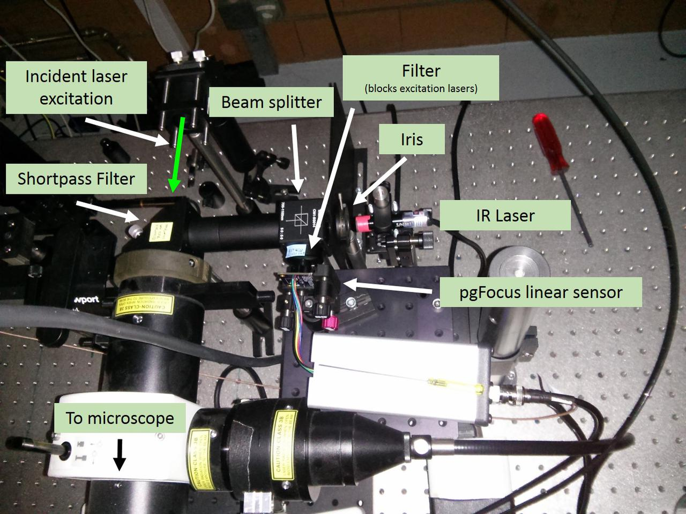

Table of Contents
1 ESImaging DAC (Analog Source) Setup
I used an ESImaging DAC controller as the analog voltage source that drives our piezo objective scanner. This has to be configured to work in uManager.
1.1 Download and install the FTDI USB to serial converter driver
I did not need to do this. Windows Server 2008 installed the drivers automatically.
1.2 Configure Micro-Manager
Micro-manger is used to control the DAC.
1.2.1 Initial configuration
Create a hardware configuration that uses an ESIOImagingController.
Be sure to set the proper COM port and the following port settings:
- AnswerTimeout: 500.0
- Baud rate: 57600
- DelayBetweenCharsMS: 0.0
- Handshaking: Off
- Parity: None
- StopBits: 1
- Verbose: 0
In the same configuration, add a DA Z Stage (found under Utilities).
Enter the settings for the minimum and maximum control voltages. (I need to find what these are still).
1.2.2 Link the z-stage to the DAC
In the Device/Property Browser, set the DA Z-Stage/DA Device property to the desired output port of the DAC.
BE SURE TO SET THE VOLTAGE LIMITS AND SCANNER RANGE AS NOTED ABOVE.
2 pgFocus Software Setup
This is the setup for getting the pgFocus software working. It may not actually require the Arduino IDE, but it's useful for running tests, such as sending 'l' or 'v' to the pgFocus board through the serial input.
2.1 Install the Arduino IDE
Version 1.0.5
2.2 Install Processing 2.03
Don't install 2.1 because funtionality was lost.
Also, I need to download the 32-bit version because the processing.serial library does not work with the 64-bit version.
2.2.1 Install the G4P library, version 3.3.1, for Processing
2.2.2 (OLD) Install the guicomponents library for Processing
(NOTE: Karl has updated the code to use G4P, so we can use that library for code that was pushed to gitHub later than .)
Karl uses an old verion of Gui 4 Processing (G4P) called guicomponents. I downloaded version 2.0.3 from here:
http://code.google.com/p/gui4processing/downloads/detail?name=guicomponents%20V2.0.3.zip&can=2&q=
To install the library, I unzipped the components into a folder named guicomponents in C:\Users\douglass\Documents\Processing\libraries
The pgFocus program throws an error related to this library, but it doesn't seem to affect it or keep the program from running.
2.3 Install Arduino Leonardo drivers
This didn't seem too bad. After installing the Arduino IDE, I performed the following steps:
- Open Device Manager
- Under Ports (COM & LPT), right click Arduino Leonardo (the COM address shouldn't matter).
- Select 'Update Driver Software…'
- Select `Browse my computer for driver software'
- Choose this directory: C:\Program Files (x86)\Arduino\drivers
2.4 Install the pgFocus software
https://github.com/kbellve/pgFocus-software
I placed it inside the Processing Documents folder. Be sure to pull the version from December 5, 2013 or later, since this allows you to set the correct COM port used by the pgFocus module. There are also executables included in this version, so the Processing script need not be run.
3 Optics Setup
The optics for the pgFocus were constrained by the following factors:
- It had to integrate into an existing microscopy setup using several external free space lasers for epi-illumination. Two mirrors steer the beam into the microscope's epi-illumination port, and the one closest to the lasers acts as a very narrow entrance pupil.
- It has to pass the IR beam through the epi-illumination port. There are too many filters in the imaging pathway to get the IR beam through to the objective and back.
- The IR beam has to be totally internally reflected from the coverslip. The direct reflection of the beam has too many interference fringes and is not sensitive to very small displacements of the objective.
- As much power as possible from the excitation lasers must be maintained, which means a minimum of optics must be introduced into their beam path.
3.1 Layout on optical bench
Below I've included a sketch of the setup. This setup is quite different than the OLD one mentioned below. I had to abandon the design consisting of a self-contained setup on a small breadboard because of the complexities of integrating the optics into an existing microscopy setup.
In the old setup, the mirrors used in the periscope that directed the laser beams for fluorescence excitation presented the infrared beam with an entrance pupil that was too small. The IR beam could not be brought into TIR mode. This is important because the direct reflection from the coverslip contains too many interference fringes for the pgFocus to lock onto.
In the current setup, I only needed to introduce a shortpass filter into the beam path for the fluorescence excitation lasers. The infrared laser used by the pgFocus passed through an iris and beam splitter, then was reflected by this shortpass filter into the microscope.
The return beam exited the microscope through the same port, reflected off the shortpass filter, then was reflected by the beamsplitter onto the linear sensor array.

3.2 Alignment of the infrared beam
The alignment of the IR beam in the objective's back focal plane is critical to achieving a strong reflection from the coverslip and for being sensitive to objective displacements.
Due to the presence of an epi-illumination lens in our microscope, I did not worry about placing any lenses in front of the IR beam. The IR beam was collimated at the laser output, and the epi-illumination lens focused the beam onto the objective's back focal plane.
To bring the beam into a totally internally reflecting mode (TIR), the beam has to be focused to a point on the perimeter of the objective's rear aperture. You'll see this helpful "tip" everywhere, but there are very few resources that tell you how to know if the beam is actually focused at one of these points. Also, my laser was 830 nm, which meant that I needed an IR viewer card to see it. This added another layer of difficulty to the alignment.
Here is a rough summary of the steps I follow for alignment of the IR beam. If you have questions that require me to be more specific, please feel free to ask. My e-mail address is kyle.m.douglass@gmail.com.
- Mount your sample. Use index-matching oil between the objective and coverslip. Without it, you probably won't be able to make the IR beam totally internally reflect off the coverslip/sample interface. And since this system really only works for high NA immersion objectives, your images will be pretty bad if you don't use oil anyway.
- Get the beam roughly aligned. Use the tip-tilt stage that the shortpass filter is mounted to and the tip-tilt controls on the laser mount to get some (really, any) IR light through the objective. Check this by holding the IR viewer card close above the sample. You can also remove any filters in the imaging path and look for the IR beam on your camera output.
- Once you can see the beam on the camera, use the tip-tilt stages so the beam goes straight up and away from the objective. Check also that the beam is centered on your camera's field of view. If these two conditions are satisfied, your beam is passing through the center of the objective's back aperture and is traveling parallel to the optics axis.
- Warning Try not to send the beam into anyone's eyes during this step. It's probably eye safe, but better safe than sorry. Use one of the tip-tilt adjustment screws to adjust the beam direction so that it leaves the objective at an angle, instead of going straight upwards.
- Note the direction that the beam has traveled on the camera. It's likely gone up, down, left, or right. This part is important, because you want to align the beam so that axial drift of your objective causes a movement of the reflected beam that is parallel to the pgFocus linear sensor array.
- At angles where the beam approaches the periphery of the field of view on the camera, you should see a strong reflection in the plane of the pgFocus sensor. This will be the TIR beam. Align the pgFocus sensor so that it's centered on this beam. Note the alignment of the sensor array.
- Bring up the intensity readout screen in the pgFocus software. (Press the 'l' key if using the original Processing code.) You should see a spike corresponding to the beam. Adjust the iris to control the beam power if you're saturating the detector, or place a neutral density filter in front of the beam. (I was surprised at how much power I got back from the objective from only a 1 mW laser. The pgFocus's sensor array is very sensitive, but I don't think you can damage it with a reasonable amount of saturation.)
- You can adjust the tip-tilt of the laser slightly to center the beam on the linear pixel array, but make sure that the beam is at the critical angle or beyond it for TIR.
- As a test, move the objective scanner up and down so that the
objective is translated axially. I can see lateral shifts of the
beam profile on the pgFocus intensity readout by eye that are as
small as 50 nm. If you don't see a shift, there are two possible
reasons.
- Another reflection from the other optics is hitting the linear sensor array and not the TIR beam.
- The TIR beam is moving perpendicular to the pgFocus array with axial objective displacements. You can either rotate the pgFocus sensor array by 90 degrees or move the IR beam to another position in the back focal plane. Looking at the camera readout, this means the beam should be on the left/right of the screen if it was originally at the top/bottom, or vice versa. You will probably have to readjust the pgFocus's sensor array position when you do this.
If all goes well, you should see a narrow, single peak that is centered in the pgFocus intensity readout. If you change the objective scanner's position by as little as a few tens of nm you should be able to perceive a change in the position of this peak. The pgFocus tends to judge better than my eye can at objective displacements, so I believe that you can achieve focus locking with 10 nm precision or smaller (tests of this to come).
4 Hardware setup
The hardware is centrally controlled by a computer through the Micro-Manager software. Aside from the camera and shutter, Micro-Manager also controls an ESImaging DAC controller as the piezo control voltage source. It should have been configured as noted in ESImaging DAC (Analog Source) Setup above.
4.1 Schematic hardware and connections
5 Testing
I am working on this as of February 26, 2014, and will report results soon.
6 (OLD) pgFocus Optics Setup
6.1 Notes on the old setup
I learned after a bit of fiddling with the following setup that it suffered from two limitations. One limitation, which is minor, is that it is a bit difficult to bring the IR beam into objective TIRF mode with the pair of tip-tilt mirrors. Originally, I had placed the mirrors on tip-tilt mounts for beam alignment and planned to translate one of the mirrors to move the beam into TIRF. Unfortunately, I soon discovered a tube lens in the microscope body (an Olympus IX71) that I did not account for. This meant that a simple translation of the mirror did not correspond to a simple lateral translation of the beam in the objective's back focal plane. Instead, the beam's position and angle changed at the same time.
More severe was the placement of the setup relative to the microscope body. Due to the constraints of installing this into an existing microscope setup, I had to place the breadboard seen below a fair distance from the epi-illumination port of the microscope. The mirrors that send our fluorescence excitation beams into the microscope act as effective apertures that severly limit the angle of the beam entering the scope body. Because of this, I can not squeeze the beam into microscope at a steep enough angle to bring the IR beam into TIRF.
I could get a direct reflection returned from the coverslip that was very strong, but it contained interference fringes and was not very sensitive to very small objective displacements.
All my notes on this design are the original, though, for reference in the future.
6.2 Components
The optics for the pgFocus include the following important items:
- IR laser (we used an 830 nm, 1 mW diode laser)
- Two lenses for focusing the laser beam
- Two beam steering mirrors
- Beam splitter
- Dichroic short pass filter (ours has a 750 nm cutoff wavelength).
6.3 Schematic
Below is the breadboard for the optics used for the autofocus module. I use a lens pair (two +25mm focal length lenses) to adjust the divergence of the beam which allows me to focus the beam in the objective's back focal plane (BFP). The mirrors are mounted to tip-tilt stages for beam steering and the second mirror is on a translation stage. Once the beam is centered and focused in the BFP, I translate the stage to move the focus to the edge of the BFP for TIRF imaging.
I have not shown the dichroic filter which is inserted into the fluorescence excitation beam path of our existing setup. I have also not shown the linear sensor array from the pgFocus, but I have marked its location.
6.4 Installation
I performed the following steps when installing the autofocus optics into our existing setup.
- Attach breadboard to optical table.
- Insert dichroic filter into the beam path.
- Bring a sample of fluorescent microbeads into focus on the
camera. Try using white light first to see the beads, then use
the excitation laser to view the fluorescence.
- If this doesn't work, I may need to reposition one of the lenses in the beam expander in the existing optical train. This is because the dichroic filter will slightly change the path length of the excitation beam.
- Once the image is found, turn on the IR laser and try to make
it colinear with the excitation beams. Use the dichroic mount
for alignment first and the mirrors on my custom breadboard
second.
- Watch the image on the computer. The Andor iXon should be able to see IR light at 830nm (unless there's an IR filter in front of the chip).
- Align the beam so that it's centered in the FOV and focused at the objective's back focal plane. This would be the alignment for an epi-fluorescence setup if indeed we were using the IR beam to excite fluorescence.
-
Translate (using the translation stage, not the tip-tilt adjustments!) the mirror on the custom breadboard to move the IR focus to the edge of the back focal plane. This should put the beam into TIRF mode. Note that I need to swap the high NA objective on the microscope first. - I discovered that there's a tube lens in our beam path somewhere before the objective and after the epi-illumination input port on our Olympus IX71. This probably focuses a collimated laser beam onto the objective's BFP. Use the tip-tilt mirrors on the autofocus breadboard and not the translation stage to center the beam. The reflected beam from the coverslip is strong enough to work for an air/coverslip interface.